April 23, 2018
Pivot Tables are Magic
For me, working with automated crawl data is about translation: how do I make meaning out of these robot results? How do I condense the noisy numbers into a signal—something that provides insights for my strategy and brings my clients along on the journey?
Automated audits are a common, and often crucial, tool in content work—but they’re nearly useless in their raw form:
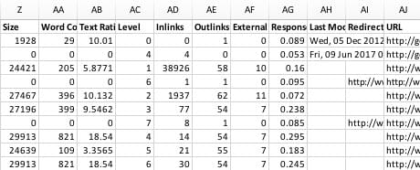
For me, working with automated crawl data is about translation: how do I make meaning out of these robot results? How do I condense the noisy numbers into a signal—something that provides insights for my strategy and brings my clients along on the journey?
Thank heavens for pivot tables, a bit of spreadsheet functionality that I rely on for parsing that data. They are a bridge between an infinite void of data and a scrutable set of charts and recommendations.
I adore them, but not everyone knows what they are or how they work, so I wanted to show one way that I use them in my content analyses.
(Quick disclaimer: I am about to talk a lot about Excel. I am not an Excel expert. This means my methodology may be… let’s call it imperfect. Also, pivot tables work a little differently on Mac versus Windows; I’m writing from a Mac perspective.)
What are pivot tables for?
Formal talk: pivot tables calculate the portion of entries in a large data set that conform to specific criteria.
Content audit talk: pivot tables will instantly tell you how many pages exist in each section of your site.
And they’ll do it quickly and cheaply and nonchalantly. They crunch numbers much more efficiently than eyeballs can, making them especially useful for big sites.
They’ll do a lot more than that, too, but for now, let’s just stick with this one common audit question: what do I have, and where do I have it?
A step-by-step tutorial
I’m going to show you, with screenshots, exactly how I build a pivot table to measure page distribution across sections of a site.
Step 1: Add section data
First, I have to manually add the site section for each page into a new column in my audit spreadsheet.
Most crawl tools can’t scrape section data, because “site sections” are loosey-goosey human conventions. Unless a site has extraordinarily rigorous governance and URL management strategies, there is going to be a lot of disagreement over what constitutes “sections.” The main navigation, the URL structures, and observable user pathways all create different boundaries.
I use URL structure as my “site section” delineator—that is, I consider the section to be whatever the first folder level is off the main domain. So a URL like website.com/about would tell me that the page is in the “About” section. This is the quickest way to add section data, even for 10,000+ entries (like my last audit).
(That approach wouldn’t work on a site where the URLs don’t follow folder paths, i.e. all pages spring directly from the main domain. But if there are at least some folder pathways, I’m comfortable using them as a proxy for sectioning. If, upon deeper review of the site, I discover that the folder paths aren’t reliable indicators—well, that, too, is a valuable insight, indicative of inconsistent URL strategies and broken menus.)
In my last audit (potentially identifying information redacted!), you can see that I manually added not only a column for Section, but Subsection as well:
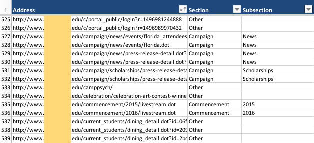
Step 2: Build the pivot table
Once I’ve manually added section data to the spreadsheet, I can set up my pivot table. To do this, first I select my data—the whole sheet, or just the columns I think I’ll need—then select Data in the main menu, then select Summarize with Pivot Table.
That brings up this modal:
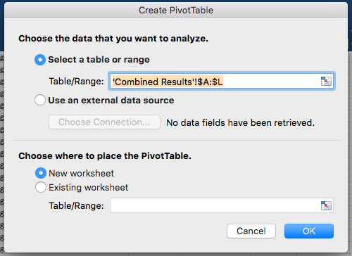
The highlighted field shows the range of data selected (in this example, my sheet is called “Combined Results,” and I selected columns A through L). I always place it on a new worksheet (meaning new tab, same document), which opens up a tab before the one I’m already on, for reasons only clear to the Microsoft trickster deity.
I click OK and my new tab is: blank. To populate the table, I have to tell it how to work with the data—that is, which columns I want to use as my criteria. The Pivot Table Fields modal shows all the columns I selected before:
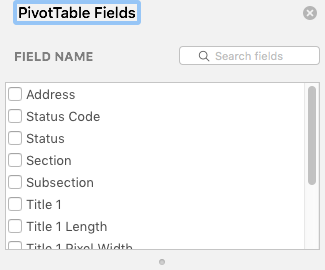
Selecting one of those boxes—like Address—adds it to the areas underneath:
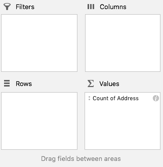
Excel automatically places it in Values, and automatically assigns it “Count” (you can change this to Sum, Average, Max, Min, etc. by clicking on the i icon). Meanwhile, elsewhere on the tab, a table has appeared:
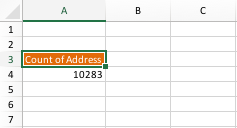
Not very exciting yet, but that’s because it’s only analyzing one thing: the Count (literally, it’s just counting) of all the entries in the column labeled Address. It’s telling me that there are 10,283 pages in my site, because there are 10,283 rows in my spreadsheet.
But the beauty of pivot tables is that I can complicate it, neatly.
Step 3: Customize the pivot table
I go back to my pivot table fields, and I select Section (in addition to Address):
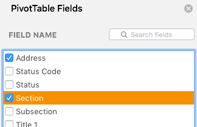
Which, again, automatically adds it to the Values area below:
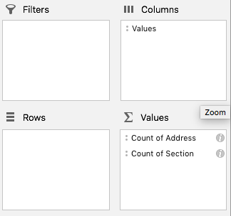
But all this does is add another column to my useless table, telling me that there are 10,282 entries in the Section column:
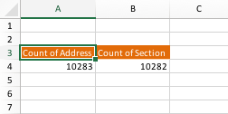
What I want to know is how many pages are in each of the sections, and this is where pivot tables start to shine. I drag “Count of Section” from out of the Values area and into the Rows area:
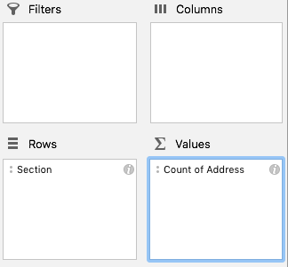
And all of a sudden, my table has something to say:
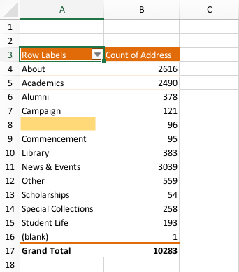
Is that not amazing?
In just a handful of clicks, I went from not knowing anything about scope, to knowing exactly how pages are distributed across the site.
Step 4: Tweak the data
Sometimes, the data that pops up in the pivot table needs a bit of finessing. For instance, the first time I ran this particular analysis, my section list was twice as long, most with only a few pages to their name. It was too granular and distracting, especially since my goal was to draw attention to the biggest real estate hogs.
I went back to my data and started deploying that tricky label, “Other,” to replace any section name that was sparsely populated. Through trial and error, I established a cutoff: if a section didn’t have at least fifty pages in it, it wouldn’t be counted individually. I reran the pivot table multiple times (there’s a Refresh option available on right-click) to find the right balance of section representation.
I can also change what the table displays without changing the data itself. To demonstrate the actual pivoting of pivot tables: if I were no longer interested in knowing how many pages are in each section, I would deselect those options in the Pivot Table Fields modal, and select different ones instead.
Just changing which fields are selected, and which modal areas I place them in, will change the table itself. I don’t have to start over and build a new table from scratch; I can play around with the data display, with low commitment and minimal fuss.
Step 5: Visualize the data
The other thing I love about pivot tables is that they make it very easy to visualize what I see in them. It’s one thing to understand the numbers a little more clearly, but I have to communicate the key points to my clients, who don’t have time to pore over elaborate spreadsheets (or learn pivot tables). And that’s where charts can do some heavy lifting.
First, I select the data in the pivot table that I want to display in the chart. That means everything except the Grand Total and the homepage (the one shown as “blank,” since I wouldn’t have assigned it a section):
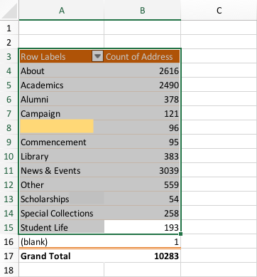
Then I select Insert > Chart > Pie:

A pie chart doesn’t serve every metric (I use bar and line graphs for other data sets), but it’s perfect for visualizing the real estate of the site. It’s a much more immediate way of showing my clients: wow, that’s a lot of News & Events.
The bigger picture
Calculating the real estate of a site is one of the first things I do during a content audit, and it’s a very common metric, but it’s far from the only thing you can use pivot tables for. I use pivot tables to count images with alt text versus images without, to triage sections with low readability scores, to compare inlink and outlink counts, and a lot more.
And pivot tables and pie charts aren’t the only players in my content analysis. I have many other elements to consider during the discovery phase—the site’s structure, the findability and usability of the page content, the technical constraints of the project, the users’ needs and tasks, the business goals for the site, and more—to form a complete understanding of the site content and how it might be transformed.
If you use automated crawls, and you’re new to pivot tables, I hope this has shown you one way that pivot tables might help you. My biggest recommendation is to experiment with them, since that’s how I’ve learned what I’ve learned. Poke at pivot tables with a sharp stick. Click and unclick every option. Ask, “What happens if I drag this field to this box instead?” See if they make some magic for you, too.